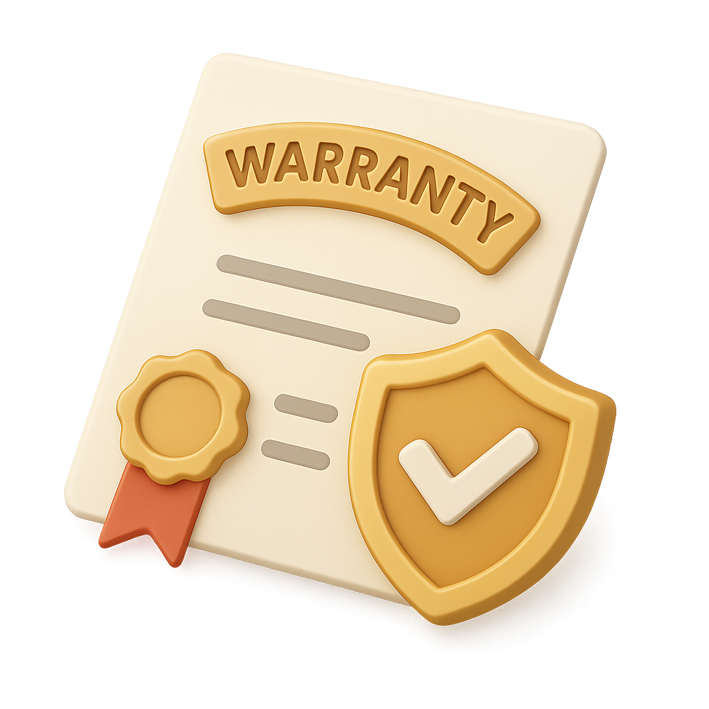
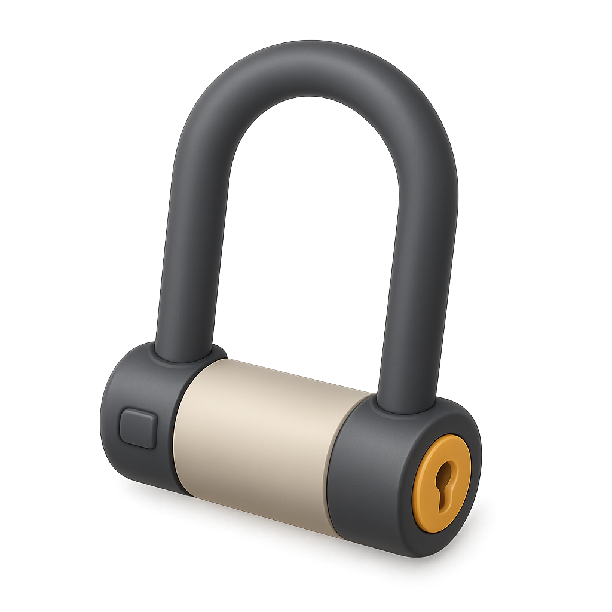

City Bike (Back-pedal brake)
A clássica holandesa com freio no pé.
A partir de €XX/diaHigh-quality bike rentals in the heart of the city. Avoid queues and secure
your
bike online
with a
10%
discount.

Free Insurance included

2 Locks per bike
5-star TripAdvisor rating

A clássica holandesa com freio no pé.
A partir de €XX/diaModelo com freio de mão e marchas.
A partir de €XX/diaIdeal para longas distâncias ou vilas vizinhas.
A partir de €XX/diaPara famílias com crianças pequenas.
A partir de €XX/diaEscolha o modelo e o período (1 a 7 dias).
Venha até nossa loja perto da Centraal Station.
Devolva em qualquer uma de nossas unidades.
Explicamos como usar os dois cadeados para você não ter preocupações.
Receba um mapa digital com as rotas mais seguras e bonitas da cidade.
Se chover o dia todo, reagendamos seu aluguel gratuitamente.
"Primeira vez em Amsterdã e a equipe nos deu todas as dicas de segurança. As bikes eram ótimas!"
— Turista Estrangeiro
Sim, Amsterdã tem ciclovias exclusivas e regras bem sinalizadas.
Explicamos todos os procedimentos de seguro no momento da retirada.
Na Holanda quase ninguém usa, mas oferecemos como opcional para sua segurança.
Destaque: A 5 min da Casa de Anne Frank e Próximo à Estação Central.